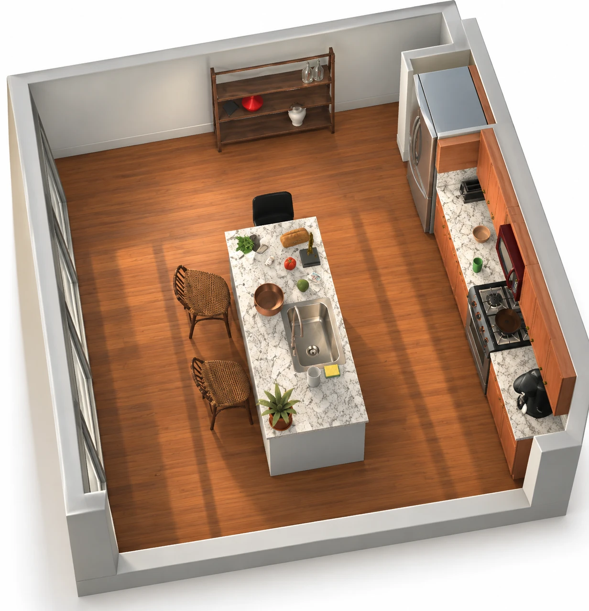
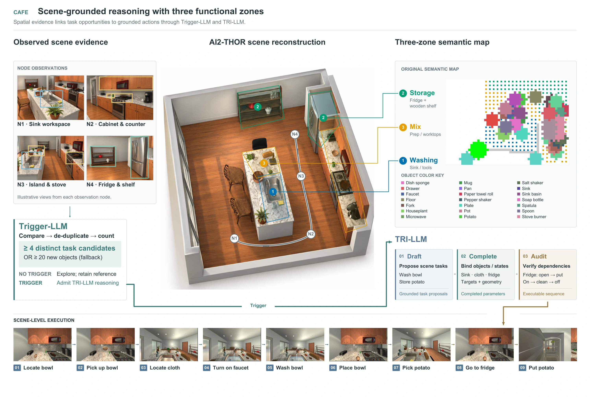
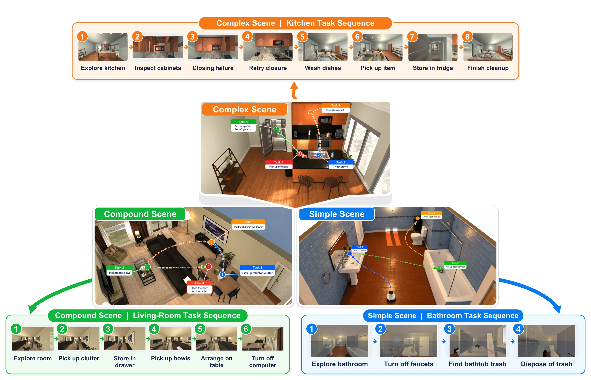
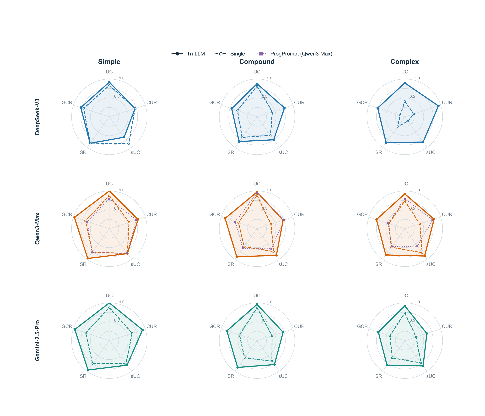
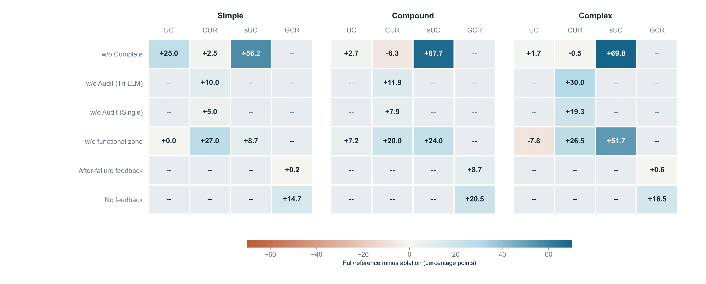
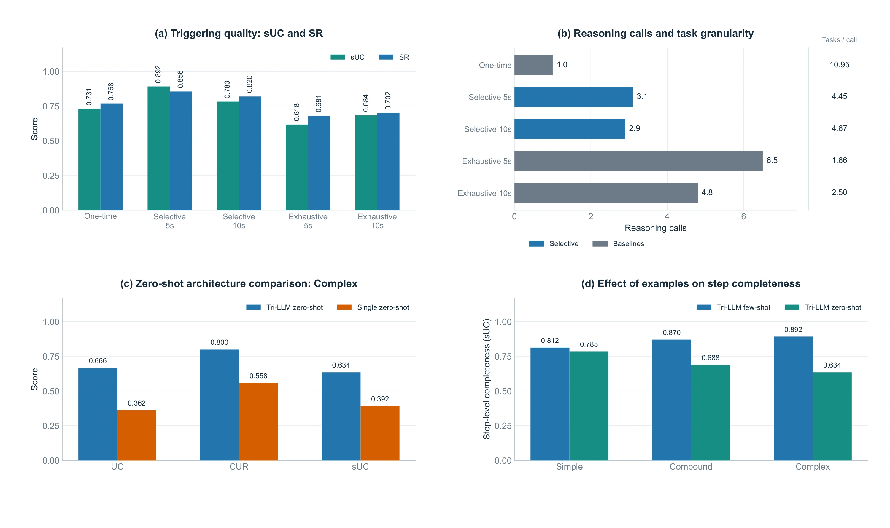
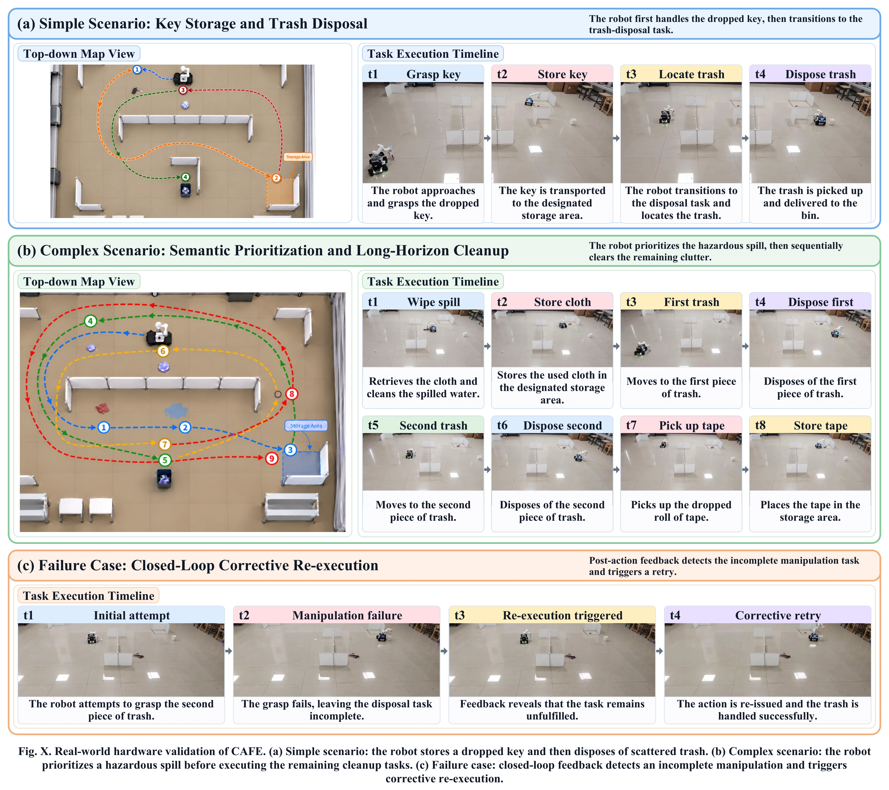

Observe & remember
Track objects, functional zones and scene changes as the robot explores.
AUTONOMOUS EMBODIED INTELLIGENCE
without Explicit Task Input
A robot that discovers what needs doing,
grounds a plan, and learns from execution.

THE IDEA
Most embodied systems begin with a human-provided goal. CAFE begins with an evolving scene state.
During exploration, the robot maintains semantic memory of objects, functional zones and changing states. Trigger-LLM decides when accumulated evidence warrants reasoning. TRI-LLM then drafts tasks, completes their grounding and audits their dependencies before execution.
Execution outcomes update the same memory, allowing the robot to revisit incomplete tasks and adapt its plan.
A fixed task-category prior covers cleaning, safety and storage/organization. The robot receives no scene-specific task list or step-by-step instructions; structured perception and action primitives remain part of the system.
CAFE / PROJECT VIDEO
Follow the closed-loop framework from scene observations to autonomous task formulation and execution.
01 / METHOD
Shared semantic memory links observation, selective triggering and the Draft–Complete–Audit pipeline.

Expand figureTrack objects, functional zones and scene changes as the robot explores.
Invoke TRI-LLM when actionable evidence accumulates. Propose tasks, bind missing parameters and verify dependencies.
Run grounded actions, write outcomes back into memory and revisit incomplete tasks.
02 / SIMULATION
From independent bathroom chores to coordinated organization and interleaved kitchen tasks.

Expand figureTurn off the faucet and dispose of trash found in the bathtub.
Store clutter, arrange bowls and turn off the computer in a grounded sequence.
Manage dishes, open cabinets and misplaced items, with corrective retries after failures.
03 / QUANTITATIVE RESULTS
Evaluate task understanding, constraints, step completeness and grounded execution across three backbones.
Five complementary measures

Expand figure| Method | Backbone | UC ↑ | CUR ↑ | sUC ↑ | SR ↑ | GCR ↑ |
|---|
TRI-LLM rows are highlighted. Bold marks the best value in each column, including ties. All metrics are higher-is-better.
04 / ABLATIONS
Component removal, triggering strategy and prompt generalization reveal different contributions to the autonomy loop.

Expand figure
Expand figure ↗More reasoning calls do not necessarily produce better task completion. CAFE uses a heartbeat to accumulate evidence and selectively admit deeper reasoning.
05 / REAL-WORLD VALIDATION
LimoCobot demonstrations cover task discovery, prioritized cleanup and corrective re-execution.

Expand figureStore a dropped key, then locate scattered trash and carry it to the bin.
Handle spilled water before the remaining clutter, including trash and a misplaced roll of tape.
Post-action feedback identifies an incomplete grasp and initiates corrective re-execution.
LOOKING AHEAD
Perception errors can propagate into task formulation, and execution depends on reliable controllers and skill primitives. Current experiments focus on one robot; multi-agent and human–robot collaboration remain future directions.
The physical-robot demonstrations illustrate example behaviors rather than long-term deployment reliability.